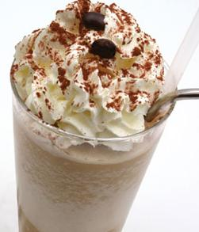

Receta de Cóctel de café frío sin alcohol - Hogarmania
2021.06.26 11:10

Cocina Programas Recetas Cocineros Escuela Buscador Comunidad Cocina Decoración Bricolaje Manualidades Jardín Hogar Mascotas Belleza Salud Comunidad
Cócteles
Hogarmania Cocina Recetas CóctelesReceta de Cóctel de café frío sin alcohol
Aprende a preparar un cóctel de café frío sin alcohol con esta sencilla vídeo receta . Se trata de una bebida digestiva ideal para los días de calor.
ÍNDICE DE CONTENIDOS
Ingredientes para elaborar el Café frío: Elaboración para elaborar el Cóctel de café frío: ¿Cómo se prepara el azúcar líquido? Trucos: ¿Sabes cuál es la diferencia entre café irlandés y café escocés?Hogarmania
Ingredientes para elaborar el Café frío:
6/10 de café 2/10 de azúcar líquido 2/10 de nata líquida canela para decorar cubitos de hieloElaboración para elaborar el Cóctel de café frío:
Introduce unos cubitos de hielo en la coctelera. Vierte café al gusto y un chorrito de azúcar líquido. Cierra la coctelera y agítala ligeramente sin que llegue a aguarse el café.
Llena el vaso con unos cubitos de hielo y vierte el café de la coctelera, dejando que caiga también espuma.
Añade la nata poco a poco. En lugar de echarla directamente sobre el café, viértela sobre una cucharilla para que no se mezcle con el café y así queden dos capas.
Decora el cóctel de café frío con un poco de canela molida en la superficie. Coloca una pajita si lo deseas y sirve.
¿Cómo se prepara el azúcar líquido?
El azúcar líquido se puede preparar en casa de forma muy sencilla. Basta con hacer un almíbar con 1 litro de agua y 1 kg de azúcar.
Trucos:
Al ser un cóctel de trago corto, utilizaremos un vaso pequeño y ancho.
Para decorar, puedes utilizar un molinillo eléctrico de pimienta. Rellénalo con un poco de canela en polvo mezclada con azúcar moreno y decora la superficie de la nata.
Puedes preparar este cóctel a tu gusto, por ejemplo, poniendo café descafeinado o utilizando sacarina líquida en lugar de azúcar. Además, puedes variar las cantidades para adaptarlo a tus preferencias.
¿Sabes cuál es la diferencia entre café irlandés y café escocés?
La única diferencia entre estas dos bebidas es el origen del whisky, ya que en uno se utiliza whisky irlandés y en el otro se utiliza whisky escocés. Sin embargo, el resto de ingredientes y la elaboración son iguales.
Cóctel de café frío con alcohol
Si prefieres preparar el cóctel de café frío con alcohol , te proponemos esta receta de café con nata, whisky y sirope de chocolate.
¡Suscríbete a COCINA ABIERTA !
Recibe en tu email ideas y recetas de cocina
Lo último Lo más visto CóctelesCóctel para Halloween: Sueños de bruja
CóctelesCóctel para Halloween: Susurros desde Transilvania
CóctelesOjos sangrientos para decorar bebidas en Halloween
Cócteles10 cócteles refrescantes para tus fiestas de verano
CóctelesCook & fashion (cóctel con alcohol)
CóctelesDaikiri (con alcohol) 1895 veces
CóctelesPiña colada (con alcohol) 1670 veces
CóctelesCoco loco (con alcohol) 1520 veces
CóctelesMojito (con alcohol) 1145 veces
CóctelesSan Francisco (sin alcohol) 1050 veces
Tags relacionados café cócteles a domicilio cócteles © Bainet Comunicación S.A. - Publicidad: 944010751 publicidad@bainet.es - Aviso legal - Política de Privacidad y cookies
- Cinco recetas de cócteles especiales para el frío de las .
- 16 ideas de Coctel frio | recetas de comida, recetas para .
- Los 5 mejores cócteles para combatir el frío este invierno
- Cócteles para quitar el frío del cuerpo | Recetas El Comidista .
- 63 ideas de Coctel frio | comida, aperitivos, recetas para cocinar
- Receta de Cóctel de café frío sin alcohol . - Pinterest
- Cócteles de invierno: receta y cómo hacer tragos y bebidas .
- Cómo Hacer Cócteles Fáciles y Buenos: Mejores Recetas
- Receta de Cóctel de café frío sin alcohol - Hogarmania
- Receta de Cóctel de café frío con alcohol - Hogarmania .
- Cinco recetas de cócteles especiales para el frío de las .
- 16 ideas de Coctel frio | recetas de comida, recetas para .
- Los 5 mejores cócteles para combatir el frío este invierno
- Cócteles para quitar el frío del cuerpo | Recetas El Comidista .
- 63 ideas de Coctel frio | comida, aperitivos, recetas para cocinar
- Receta de Cóctel de café frío sin alcohol . - Pinterest
- Cócteles de invierno: receta y cómo hacer tragos y bebidas .
- Cómo Hacer Cócteles Fáciles y Buenos: Mejores Recetas
- Receta de Cóctel de café frío sin alcohol - Hogarmania
- Receta de Cóctel de café frío con alcohol - Hogarmania .
